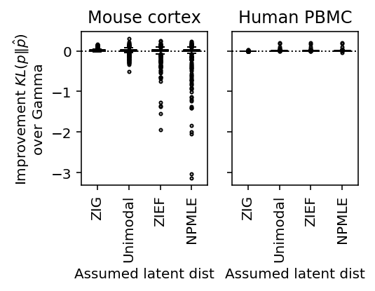
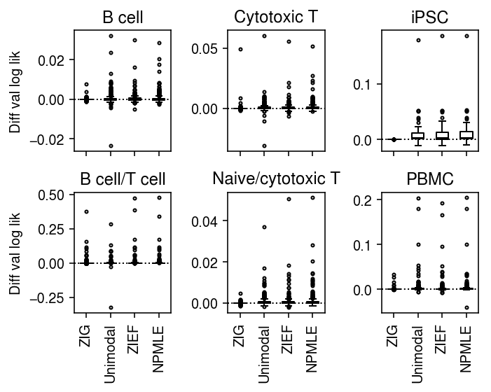

Comparison of expression deconvolution approaches
Table of Contents
Introduction
Suppose we have observations \(x_i \sim f(\theta_i), i = 1, \ldots, n\), and \(\theta_i \sim g(\cdot)\). Distribution deconvolution is the problem of estimating \(g \in \mathcal{G}\) from \(x_1, \ldots, x_n\), assuming \(f\) is known (Efron 2016).
Recent work suggests that scRNA-seq data follows this generative model (Wang et al. 2018). Here, we investigate the trade-off between model complexity/flexibility and generalization for different choices of \(\mathcal{G}\) in real data.
Setup
import multiprocessing as mp import numpy as np import pandas as pd import scanpy import scipy.stats as st import scipy.special as sp import scmodes import sklearn.model_selection as skms import rpy2.robjects.packages import rpy2.robjects.pandas2ri import rpy2.robjects.numpy2ri rpy2.robjects.pandas2ri.activate() rpy2.robjects.numpy2ri.activate() ashr = rpy2.robjects.packages.importr('ashr') descend = rpy2.robjects.packages.importr('descend')
%matplotlib inline %config InlineBackend.figure_formats = set(['retina'])
import colorcet import matplotlib.pyplot as plt plt.rcParams['figure.facecolor'] = 'w' plt.rcParams['font.family'] = 'Nimbus Sans'
Methods
Distribution deconvolution
The general form of distribution deconvolution for scRNA-seq is:
\[ x_{ij} \sim \mathrm{Poisson}(\exp(\mathbf{z}_i' \mathbf{b}_j) \lambda_{ij}) \]
\[ \lambda_{ij} \sim g_j(\cdot) \]
where:
- \(x_{ij}\) is the count of molecules of gene \(j\) in cell \(i\)
- \(\mathbf{z}_i\) is a \(q\)-vector of covariates for cell \(i\)
- \(\mathbf{b}_j\) is a \(q\)-vector of confounding effects on gene \(j\)
- \(\lambda_{ij}\) is proportional to the relative abundance of gene \(j\) in cell \(i\)
The primary inference goal is to recover \(g_j\). A secondary goal could be to recover \(\lambda_{ij}\). We can trade off flexibility and complexity of \(g_j\) for ease of implementation and speed.
- Point mass: \(g_j = \delta_\mu\). We mention it for completeness.
- Gamma: \(g_j = \mathrm{Gamma}(\cdot)\). This leads to the negative binomial marginal likelihood, and can be motivated by the empirical observation that the counts are overdispersed.
- Point-Gamma: \(g_j = \pi_j \delta_0(\cdot) + (1 - \pi_j) \mathrm{Gamma}(\cdot)\). This leads to the zero-inflated negative binomial marginal likelihood, which is still analytic and therefore computationally favorable. The inclusion of the point mass can be motivated by theory suggesting a biological mechanism for bimodal gene expression (Munsky et al. 2013, Kim and Marioni 2013).
- Unimodal: \(g_j\) is some unimodal distribution over non-negative reals. In practice, we represent this family of distribution as \(g_j = \sum_k \pi_k \mathrm{Uniform}(\cdot; \lambda_0, a_{jk})\), where \(k = 1, \ldots, K\) are sufficiently many and \(\lambda_0\) is the mode (Stephens 2016).
- Zero-inflated exponential family: \(g_j = \exp(\mathbf{Q}\alpha -
\phi(\alpha))\), where \(\mathbf{Q}\) is a
B spline spline basis matrix
for a natural cubic
spline
(
nsfunction; Efron 2016). The key idea of the method is use spline regression to find the sufficient statistic and natural parameters which maximizes the penalized likelihood of the observed data. The method has been extended to include a point mass on zero (Wang et al. 2018). - Nonparametric: \(g_j\) is some distribution over non-negative reals
(Kiefer and Wolfowitz
1956). In practice, we discretize the representation
(Koenker
and Mizera 2014). In full detail, we use the representation \(g_j =
\sum_k \pi_k \mathrm{Uniform}(\cdot; ak, a(k + 1))\), where \(a\) is a
fixed step size, which allows us to re-use the
ashimplementation.
Benchmarking metric
In order to evaluate assumed families on their ability to explain the data, we estimate the difference KL divergence between the fitted distribution and the truth. The idea is:
\[ \hat{p} = \arg\max_{q} \frac{1}{n} \sum_i \ln q(x_i) \]
\[ \approx \arg\max_{q} \mathbb{E}_{x\sim p}[\ln q(x)] \]
\[ = \arg\max_{q} \mathbb{E}_{x\sim p}[\ln q(x)] - \mathbb{E}_{x\sim p}[\ln p(x)] \]
\[ = \arg\min_q \mathcal{KL}(p \Vert q) \]
We estimate \(\hat{p}\) on a training set, and then estimate \(\mathbb{E}_{x\sim p}[\ln \hat{p}(x)]\) using an independent validation set. By comparing against a baseline (Gamma), we don't need to estimate \(\mathbb{E}_{x\sim p}[\ln p(x)]\).
The benchmarking code is implemented in the Python package scmodes.
Benchmarking data
We deconvolve ERCC spike-in data generated on multiple platforms, pre-processed as in Svensson 2019.
- Drop-seq (Macosko et al., 2015)
- InDrops (Klein et al., 2015)
- 10x Genomics, v1 chemistry (Zheng et al., 2017);
- 10x Genomics, ??? (Svensson et al., 2017).
We additionally deconvolve spike-in data included in iPSCs derived from 53 donor individuals. We previously observed individual-specific heterogeneity in this data.
As examples of homogeneous cell populations, we use:
- Sorted immune cells sequenced on the 10X platform (Zheng et al. 2017)
- iPSCs derived from Yoruba LCLs, sequenced on the Fluidigm C1 platform (Sarkar et al. 2018)
We use the homogeneous cells populations to generate synthetic mixtures with known cell type labels.
As examples of heterogeneous cell populations, we use:
- Fresh PBMCs sequenced on the 10X platform (Zheng et al. 2017)
- Mouse neuron cells sequenced on the Fluidigm C1 platform (Zeisel et al. 2015)
Results
Example
As an example, use the highest expressed genes in 10K sorted CD8+ cytotoxic T cells Zheng et al. 2017.
x = scmodes.dataset.read_10x('/project2/mstephens/aksarkar/projects/singlecell-ideas/data/10xgenomics/cytotoxic_t/filtered_matrices_mex/hg19') xj = pd.Series(x[:,x.mean(axis=0).argmax()]) size_factor = pd.Series(x.sum(axis=1)) lam = xj / size_factor
Fit unimodal distribution.
unimix_res = ashr.ash_workhorse( pd.Series(np.zeros(x.shape[0])), 1, lik=ashr.lik_pois(y=xj, scale=size_factor, link='identity'), outputlevel='fitted_g', mixsd=pd.Series(np.geomspace(lam.min(), lam.max(), 25)), mode=pd.Series([lam.min(), lam.max()])) unimix_cdf = ashr.cdf_ash(unimix_res, np.linspace(lam.min(), lam.max(), 1000))
Fit NPMLE.
K = 200 grid = np.linspace(lam.min(), lam.max(), K + 1) npmle_res = ashr.ash_workhorse( pd.Series(np.zeros(x.shape[0])), 1, outputlevel='fitted_g', lik=ashr.lik_pois(y=xj, scale=size_factor, link='identity'), g=ashr.unimix(pd.Series(np.ones(K) / K), pd.Series(grid[:-1]), pd.Series(grid[1:]))) npmle_cdf = ashr.cdf_ash(npmle_res, np.linspace(lam.min(), lam.max(), 1000))
Fit DESCEND.
descend_res = descend.deconvSingle(xj, scaling_consts=size_factor, verbose=False)2
Fit NB/ZINB.
import numpy as np import pandas as pd import scipy.io import scmodes import scqtl x = scmodes.read10x(prefix='/project2/mstephens/aksarkar/projects/singlecell-ideas/data/10xgenomics/cytotoxic_t/filtered_matrices_mex/hg19/') size_factor = x.sum(axis=1).reshape(-1, 1) onehot = np.ones((x.shape[0], 1)) design = np.zeros((x.shape[0], 1)) init = scqtl.tf.fit( umi=x.astype(np.float32), onehot=onehot.astype(np.float32), design=design.astype(np.float32), size_factor=size_factor.astype(np.float32), learning_rate=1e-3, max_epochs=30000, verbose=True) pd.DataFrame(init[0]).to_csv('/project2/mstephens/aksarkar/projects/singlecell-modes/data/deconv-example/zheng-cd8-nb-log-mu.txt.gz', compression='gzip', sep='\t') pd.DataFrame(init[1]).to_csv('/project2/mstephens/aksarkar/projects/singlecell-modes/data/deconv-example/zheng-cd8-nb-log-phi.txt.gz', compression='gzip', sep='\t') log_mu, log_phi, logodds, nb_llik, zinb_llik = scqtl.tf.fit( umi=x.astype(np.float32), onehot=onehot.astype(np.float32), design=design.astype(np.float32), size_factor=size_factor.astype(np.float32), learning_rate=1e-3, max_epochs=30000, warm_start=init[:3], verbose=True) pd.DataFrame(log_mu).to_csv('/project2/mstephens/aksarkar/projects/singlecell-modes/data/deconv-example/zheng-cd8-zinb-log-mu.txt.gz', compression='gzip', sep='\t') pd.DataFrame(log_phi).to_csv('/project2/mstephens/aksarkar/projects/singlecell-modes/data/deconv-example/zheng-cd8-zinb-log-phi.txt.gz', compression='gzip', sep='\t') pd.DataFrame(logodds).to_csv('/project2/mstephens/aksarkar/projects/singlecell-modes/data/deconv-example/zheng-cd8-zinb-logodds.txt.gz', compression='gzip', sep='\t')
sbatch --partition=gpu2 --gres=gpu:1 --mem=16G --time=60:00 --job-name=fit-nb #!/bin/bash source activate scmodes python /project2/mstephens/aksarkar/projects/singlecell-modes/code/fit-nb.py
j = str(x.mean(axis=0).argmax()) nb_log_mu = pd.read_csv('/project2/mstephens/aksarkar/projects/singlecell-modes/data/deconv-example/zheng-cd8-nb-log-mu.txt.gz', sep='\t') nb_log_phi = pd.read_csv('/project2/mstephens/aksarkar/projects/singlecell-modes/data/deconv-example/zheng-cd8-nb-log-phi.txt.gz', sep='\t') # Gamma (Use MATLAB and MATHEMATICA (b=theta=scale, a=alpha=shape) definition) # https://github.com/scipy/scipy/blob/v1.2.1/scipy/stats/_continuous_distns.py#L2479 gamma_cdf = st.gamma(a=np.exp(-nb_log_phi[j]), scale=np.exp(nb_log_mu[j] + nb_log_phi[j])).cdf(np.linspace(lam.min(), lam.max(), 1000))
zinb_log_mu = pd.read_csv('/project2/mstephens/aksarkar/projects/singlecell-modes/data/deconv-example/zheng-cd8-zinb-log-mu.txt.gz', sep='\t') zinb_log_phi = pd.read_csv('/project2/mstephens/aksarkar/projects/singlecell-modes/data/deconv-example/zheng-cd8-zinb-log-phi.txt.gz', sep='\t') zinb_logodds = pd.read_csv('/project2/mstephens/aksarkar/projects/singlecell-modes/data/deconv-example/zheng-cd8-zinb-logodds.txt.gz', sep='\t') point_gamma_cdf = st.gamma(a=np.exp(-zinb_log_phi[j]), scale=np.exp(zinb_log_mu[j] + zinb_log_phi[j])).cdf(np.linspace(lam.min(), lam.max(), 1000)) point_gamma_cdf *= sp.expit(-zinb_logodds[j].values) point_gamma_cdf += sp.expit(zinb_logodds[j].values)
Plot the observed counts and deconvolved distributions.
cm = plt.get_cmap('Dark2').colors fig, ax = plt.subplots(2, 1) h = ax[0].hist(xj, bins=np.arange(xj.max() + 1), color='k') ax[0].set_xlabel('Molecule count') ax[0].set_ylabel('Number of cells') ax[1].plot(np.linspace(lam.min(), lam.max(), 1000), gamma_cdf, color=cm[0], lw=1, label='Gamma') ax[1].plot(np.linspace(lam.min(), lam.max(), 1000), point_gamma_cdf, color=cm[1], lw=1, label='Point-Gamma') ax[1].plot(np.array(unimix_cdf.rx2('x')), np.array(unimix_cdf.rx2('y')).ravel(), c=cm[2], lw=1, label='Unimodal') F = np.cumsum(np.array(descend_res.slots['density.points'])[:,1]) ax[1].plot(np.array(descend_res.slots['density.points'])[:,0], F / F.max(), c=cm[3], lw=1, label='ZIEF') ax[1].plot(np.array(npmle_cdf.rx2('x')), np.array(npmle_cdf.rx2('y')).ravel(), c=cm[4], lw=1, label='NPMLE') ax[1].set_xlabel('Latent gene expression') ax[1].set_ylabel('CDF') ax[1].legend(frameon=False) fig.tight_layout()

Print out the histogram for inspection.
np.vstack((h[1][:-1], h[0])).T
array([[ 0., 0.], [ 1., 1.], [ 2., 1.], [ 3., 0.], [ 4., 0.], [ 5., 0.], [ 6., 1.], [ 7., 0.], [ 8., 1.], [ 9., 5.], [ 10., 8.], [ 11., 4.], [ 12., 9.], [ 13., 9.], [ 14., 8.], [ 15., 20.], [ 16., 17.], [ 17., 24.], [ 18., 31.], [ 19., 44.], [ 20., 39.], [ 21., 41.], [ 22., 46.], [ 23., 72.], [ 24., 68.], [ 25., 74.], [ 26., 74.], [ 27., 86.], [ 28., 94.], [ 29., 114.], [ 30., 96.], [ 31., 102.], [ 32., 120.], [ 33., 132.], [ 34., 161.], [ 35., 138.], [ 36., 159.], [ 37., 197.], [ 38., 186.], [ 39., 210.], [ 40., 232.], [ 41., 244.], [ 42., 284.], [ 43., 309.], [ 44., 321.], [ 45., 332.], [ 46., 342.], [ 47., 371.], [ 48., 349.], [ 49., 356.], [ 50., 317.], [ 51., 343.], [ 52., 347.], [ 53., 342.], [ 54., 308.], [ 55., 294.], [ 56., 274.], [ 57., 272.], [ 58., 241.], [ 59., 219.], [ 60., 191.], [ 61., 164.], [ 62., 145.], [ 63., 144.], [ 64., 120.], [ 65., 121.], [ 66., 100.], [ 67., 95.], [ 68., 69.], [ 69., 62.], [ 70., 53.], [ 71., 47.], [ 72., 52.], [ 73., 32.], [ 74., 35.], [ 75., 36.], [ 76., 30.], [ 77., 28.], [ 78., 20.], [ 79., 27.], [ 80., 26.], [ 81., 21.], [ 82., 12.], [ 83., 12.], [ 84., 9.], [ 85., 7.], [ 86., 12.], [ 87., 8.], [ 88., 9.], [ 89., 6.], [ 90., 4.], [ 91., 5.], [ 92., 2.], [ 93., 2.], [ 94., 2.], [ 95., 3.], [ 96., 1.], [ 97., 2.], [ 98., 2.], [ 99., 0.], [100., 0.], [101., 0.], [102., 1.], [103., 1.], [104., 0.], [105., 0.], [106., 2.]])
Look at what is going on with NPMLE.
res0 = ashr.ash_workhorse( pd.Series(np.zeros(x.shape[0])), 1, outputlevel=pd.Series(['fitted_g', 'loglik']), lik=ashr.lik_pois(y=xj, scale=size_factor, link='identity'), g=ashr.unimix(pd.Series(np.ones(100) / 100), pd.Series(grid[:-1]), pd.Series(grid[1:]))) res1 = ashr.ash_workhorse( pd.Series(np.zeros(x.shape[0])), 1, outputlevel=pd.Series(['fitted_g', 'loglik']), lik=ashr.lik_pois(y=xj, scale=size_factor, link='identity'), g=ashr.unimix(pd.Series(np.ones(200) / 200), pd.Series(grid[:-1]), pd.Series(grid[1:])))
plt.clf() plt.gcf().set_size_inches(4, 2) grid = np.linspace(lam.min(), lam.max(), 1000) plt.plot(grid, np.array(ashr.cdf_ash(res0, grid)[1]).ravel(), label='NPMLE (100 components)', lw=1, c='k') plt.plot(grid, np.array(ashr.cdf_ash(res1, grid)[1]).ravel(), label='NPMLE (200 components)', lw=2, ls=':', c='r') plt.legend(frameon=False) plt.xlabel('Latent gene expression') plt.ylabel('CDF')
Text(0, 0.5, 'CDF')
np.array(res0.rx2('loglik')) - np.array(res1.rx2('loglik'))
array([0.])
Spike-in data
Svensson 2019 analyze negative control data in which only spike-in data is sequenced.
He claims that there should be no heterogeneity between samples in spike-ins. However, there is random sampling of molecules in the spike-in protocol, which will introduce noise. This was previously established by Wang et al. 2018.
Further, Tung et al. 2016 establish that in spike-in data added to real cells, there is considerable heterogeneity in efficiency not just between cells, but also donor individuals.
def read_chromium(sample): x = scanpy.read('/project2/mstephens/aksarkar/projects/singlecell-modes/data/negative-controls/svensson_chromium_control.h5ad') scanpy.pp.filter_genes(x, min_counts=1) return x[x.obs['sample'] == sample][:,x.var.filter(like='ERCC', axis='index').index].X.A def read_dropseq(): x = scanpy.read('/project2/mstephens/aksarkar/projects/singlecell-modes/data/negative-controls/macosko_dropseq_control.h5ad') scanpy.pp.filter_genes(x, min_counts=1) return x[:,x.var.filter(like='ERCC', axis='index').index].X.A def read_indrops(): x = scanpy.read('/project2/mstephens/aksarkar/projects/singlecell-modes/data/negative-controls/klein_indrops_control.h5ad') scanpy.pp.filter_genes(x, min_counts=1) return x[:,x.var.filter(like='ERCC', axis='index').index].X.A def read_gemcode(): x = scanpy.read('/project2/mstephens/aksarkar/projects/singlecell-modes/data/negative-controls/zheng_gemcode_control.h5ad') scanpy.pp.filter_genes(x, min_counts=1) return x.X.A def read_c1(): x = pd.read_csv('/project2/mstephens/aksarkar/projects/singlecell-qtl/data/ercc-counts.txt.gz', sep='\t', index_col=0) keep_samples = pd.read_csv('/project2/mstephens/aksarkar/projects/singlecell-qtl/data/quality-single-cells.txt', header=None, index_col=0, sep='\t') # Throw out samples with too few spike-in molecule detected return x.loc[:,np.logical_and((x.sum(axis=0) > 1000).values, keep_samples.values.ravel())].values.T data = { 'dropseq': read_dropseq, 'indrops': read_indrops, 'chromium1': lambda: read_chromium('20311'), 'chromium2': lambda: read_chromium('20312'), 'gemcode': read_gemcode, 'c1': read_c1, }
<<imports>> import os <<ercc-data>> cpu_methods = ['unimodal', 'zief', 'npmle'] tasks = [(d, c) for d in ('c1',) for c in cpu_methods] dataset, method = tasks[int(os.environ['SLURM_ARRAY_TASK_ID'])] with mp.Pool() as pool: x = data[dataset]() res = scmodes.benchmark.evaluate_deconv_generalization(x, pool=pool, test_size=0.1, methods=[method]) res.to_csv(f'/project2/mstephens/aksarkar/projects/singlecell-modes/data/deconv-generalization/{dataset}-{method}.txt.gz', sep='\t', compression='gzip')
sbatch -a 0-2 --partition=broadwl -n1 -c28 --exclusive --time=6:00:00 --mem=16G --job-name=deconv-generalization --out=benchmark-cpu.out #!/bin/bash source activate scmodes python <<EOF <<run-ercc-benchmark-cpu>> EOF
<<imports>> <<ercc-data>> for dataset in ('c1',): x = data[dataset]() res = scmodes.benchmark.evaluate_deconv_generalization(x, pool=None, test_size=0.1, methods=['gamma', 'point_gamma']) res.to_csv(f'/project2/mstephens/aksarkar/projects/singlecell-modes/data/deconv-generalization/{dataset}-gpu.txt.gz', sep='\t', compression='gzip')
sbatch --partition=gpu2 --gres=gpu:1 --mem=4G --time=60:00 --job-name=deconv-generalization --out=benchmark-gpu.out #!/bin/bash source activate scmodes python <<EOF <<run-ercc-benchmark-gpu>> EOF
Process the results.
sample_sizes = {k: int(.1 * data[k]().shape[0]) for k in data}
benchmark = {} for data in ('dropseq', 'indrops', 'chromium1', 'chromium2', 'gemcode'): benchmark[data] = ( pd.read_csv(f'/project2/mstephens/aksarkar/projects/singlecell-modes/data/deconv-generalization/{data}-gpu.txt.gz', index_col=0, sep='\t') .merge(pd.read_csv(f'/project2/mstephens/aksarkar/projects/singlecell-modes/data/deconv-generalization/{data}-unimodal.txt.gz', index_col=0, sep='\t'), left_index=True, right_index=True) .merge(pd.read_csv(f'/project2/mstephens/aksarkar/projects/singlecell-modes/data/deconv-generalization/{data}-zief.txt.gz', index_col=0, sep='\t'), left_index=True, right_index=True) .merge(pd.read_csv(f'/project2/mstephens/aksarkar/projects/singlecell-modes/data/deconv-generalization/{data}-npmle.txt.gz', index_col=0, sep='\t'), left_index=True, right_index=True)) / sample_sizes[data]
Write out the results.
pd.concat(benchmark).to_csv('/project2/mstephens/aksarkar/projects/singlecell-modes/data/deconv-generalization/control-kl.txt.gz', compression='gzip', sep='\t')
Read the results.
benchmark = { k: g.reset_index(level=0, drop=True) for k, g in (pd.read_csv('/project2/mstephens/aksarkar/projects/singlecell-modes/data/deconv-generalization/control-kl.txt.gz', sep='\t', index_col=[0, 1]) .groupby(level=0))}
Plot the generalization performance of each method.
def plot_benchmark(benchmark, titles=None, xlabel_index=None, size=None): if size is None: size = (7, 3) fig, ax = plt.subplots(1, len(benchmark), sharey=True) fig.set_size_inches(*size) if titles is None: titles = sorted(benchmark.keys()) for a, k, t in zip(ax.ravel(), sorted(benchmark.keys()), titles): T = (benchmark[f'{k}'].values - benchmark[f'{k}']['gamma'].values.reshape(-1, 1))[:,1:] a.boxplot([x[~np.isnan(x)] for x in T.T], widths=.5, medianprops={'color': 'k'}, flierprops={'marker': '.', 'markersize': 4}) a.axhline(y=0, ls=':', lw=1, c='k') a.set_xticklabels(['ZIG', 'Unimodal', 'ZIEF', 'NPMLE'], rotation=90) a.set_title(t) if xlabel_index is None: xlabel_index = np.arange(ax.shape[0]) else: xlabel_index = np.atleast_1d(xlabel_index) for a in ax[xlabel_index]: a.set_xlabel('Assumed latent dist') ax[0].set_ylabel('Improvement $KL(p \Vert \hat{p})$\nover Gamma') fig.tight_layout()
plot_benchmark(benchmark, 2)
Conclusions:
- ZIG does not perform better than Gamma, supporting the conclusions of Svensson 2019
- There is heterogeneity which isn't adequately described by Gamma, but appears equally well described by unimodal/NPMLE
Homogeneous cell populations
Run the benchmark.
data = { 'cytotoxic_t': lambda: scmodes.dataset.read_10x('/project2/mstephens/aksarkar/projects/singlecell-ideas/data/10xgenomics/cytotoxic_t/filtered_matrices_mex/hg19/', return_df=True), 'b_cells': lambda: scmodes.dataset.read_10x('/project2/mstephens/aksarkar/projects/singlecell-ideas/data/10xgenomics/b_cells/filtered_matrices_mex/hg19/', return_df=True), 'ipsc': lambda: scmodes.dataset.ipsc('/project2/mstephens/aksarkar/projects/singlecell-qtl/data/', n=100, return_df=True), }
import os <<homogeneous-data>> cpu_methods = ['unimodal', 'zief', 'npmle'] tasks = [(d, c) for d in data for c in cpu_methods] task = tasks[int(os.environ['SLURM_ARRAY_TASK_ID'])] with mp.Pool(maxtasksperchild=20) as pool: # Important: this needs to be done after initializing the pool to avoid # memory duplication x = data[task[0]]() res = scmodes.benchmark.evaluate_deconv_generalization(x.values, pool=pool, test_size=0.1, random_state=0, methods=[task[1]]) res.index = x.columns res.to_csv(f'/scratch/midway2/aksarkar/modes/deconv-generalization/{task[0]}-{task[1]}.txt.gz', compression='gzip', sep='\t')
sbatch --partition=broadwl --mem=32G -a 0-8 -n1 -c28 --exclusive --time=12:00:00 --job-name=benchmark --output=benchmark-cpu.out #!/bin/bash source activate scmodes python <<EOF <<imports>> <<run-homogeneous-benchmark-cpu>> EOF
import os <<homogeneous-data>> tasks = list(data.keys()) task = tasks[int(os.environ['SLURM_ARRAY_TASK_ID'])] x = data[task]() res = scmodes.benchmark.evaluate_deconv_generalization(x.values, pool=None, test_size=0.1, random_state=0, methods=['gamma', 'point_gamma']) res.index = x.columns res.to_csv(f'/scratch/midway2/aksarkar/modes/deconv-generalization/{task}-gpu.txt.gz', compression='gzip', sep='\t')
sbatch --partition=gpu2 --gres=gpu:1 -a 1-2 --mem=16G --time=12:00:00 --job-name=benchmark --output=benchmark-gpu.out #!/bin/bash module load cuda/9.0 source activate scmodes python <<EOF <<imports>> <<run-homogeneous-benchmark-gpu>> EOF
Process the results.
sample_sizes = {k: int(.1 * data[k]().shape[0]) for k in data}
benchmark = {} for data in ('cytotoxic_t', 'b_cells', 'ipsc'): benchmark[data] = ( pd.read_csv(f'/project2/mstephens/aksarkar/projects/singlecell-modes/data/deconv-generalization/{data}-gpu.txt.gz', index_col=0, sep='\t') .merge(pd.read_csv(f'/project2/mstephens/aksarkar/projects/singlecell-modes/data/deconv-generalization/{data}-unimodal.txt.gz', index_col=0, sep='\t'), left_index=True, right_index=True) .merge(pd.read_csv(f'/project2/mstephens/aksarkar/projects/singlecell-modes/data/deconv-generalization/{data}-zief.txt.gz', index_col=0, sep='\t'), left_index=True, right_index=True) .merge(pd.read_csv(f'/project2/mstephens/aksarkar/projects/singlecell-modes/data/deconv-generalization/{data}-npmle.txt.gz', index_col=0, sep='\t'), left_index=True, right_index=True)) / sample_sizes[data]
Write out the results.
pd.concat(benchmark).to_csv('/project2/mstephens/aksarkar/projects/singlecell-modes/data/deconv-generalization/homogeneous-kl.txt.gz', compression='gzip', sep='\t')
Read the results.
benchmark = { k: g.reset_index(level=0, drop=True) for k, g in (pd.read_csv('/project2/mstephens/aksarkar/projects/singlecell-modes/data/deconv-generalization/homogeneous-kl.txt.gz', sep='\t', index_col=[0, 1]) .groupby(level=0))}
Plot the generalization performance of each method.
plot_benchmark(benchmark, xlabel_index=1, titles=['B cells', 'Cytotoxic T cells', 'iPSCs'], size=(5, 3))

Conclusions:
- The choice of unimodal discretization matters both for generalization
performance and computational speed. The default in
ashris flawed; our choice makes the method considerably slower - In the iPSC data, modeling all samples without considering individual of origin is clearly flawed
Synthetic cell mixtures
T cell-B cell mixture
Create a synthetic heterogeneous population of cells by combining sorted CD8+ T cells and CD19+ B cells from Zheng et al. 2017.
t_cells = scmodes.dataset.read_10x('/project2/mstephens/aksarkar/projects/singlecell-ideas/data/10xgenomics/cytotoxic_t/filtered_matrices_mex/hg19/', return_df=True, min_detect=0) b_cells = scmodes.dataset.read_10x('/project2/mstephens/aksarkar/projects/singlecell-ideas/data/10xgenomics/b_cells/filtered_matrices_mex/hg19/', return_df=True, min_detect=0) x, y = scmodes.dataset.synthetic_mix(t_cells, b_cells) # Important: filter genes after mixing cells keep_genes = (x > 0).mean(axis=0) >= 0.25 x = x.loc[:,keep_genes]
<<imports>>
<<cd8-cd19-mix>>
res = scmodes.benchmark.evaluate_deconv_generalization(x.values, stratify=y, pool=None, train_size=0.5, test_size=0.1, random_state=0, methods=['gamma', 'point_gamma'])
res.to_csv(f'/scratch/midway2/aksarkar/modes/deconv-generalization/cd8-cd19-mix-gpu.txt.gz', compression='gzip', sep='\t')
(Figure \ref{fig:data-deconv}A) #+END_SRC
#+BEGIN_SRC sh :noweb eval :dir /scratch/midway2/aksarkar/modes/
sbatch --partition=gpu2 --gres=gpu:1 --mem=16G --time=12:00:00 --job-name=benchmark --output=benchmark-gpu.out
#!/bin/bash
module load cuda/9.0
source activate scmodes
python <<EOF
<<run-cd8-cd19-mix-benchmark-gpu>>
EOF
Submitted batch job 60359981
<<imports>> import os tasks = ['unimodal', 'zief', 'npmle'] task = tasks[int(os.environ['SLURM_ARRAY_TASK_ID'])] with mp.Pool() as pool: <<cd8-cd19-mix>> res = scmodes.benchmark.evaluate_deconv_generalization(x.values, stratify=y, pool=pool, train_size=0.5, test_size=0.1, random_state=0, methods=[task]) res.to_csv(f'/scratch/midway2/aksarkar/modes/deconv-generalization/cd8-cd19-mix-{task}.txt.gz', compression='gzip', sep='\t')
sbatch --partition=broadwl -a 0-2 -n1 -c28 --exclusive --mem=16G --time=12:00:00 --job-name=benchmark --output=benchmark-cpu.out #!/bin/bash module load cuda/9.0 source activate scmodes python <<EOF <<run-cd8-cd19-mix-benchmark-cpu>> EOF
Naive/activated T cell mixture
Create a synthetic mixture of cells by combining sorted CD8+ cytotoxic T cells and CD8+/CD45RA+ naive cytotoxic T cells Zheng et al. 2017.
cyto = scmodes.dataset.read_10x(prefix='/project2/mstephens/aksarkar/projects/singlecell-ideas/data/10xgenomics/cytotoxic_t/filtered_matrices_mex/hg19', return_df=True, min_detect=0) naive = scmodes.dataset.read_10x(prefix='/project2/mstephens/aksarkar/projects/singlecell-ideas/data/10xgenomics/naive_cytotoxic/filtered_matrices_mex/hg19', return_df=True, min_detect=0) x, y = scmodes.dataset.synthetic_mix(cyto, naive) keep_genes = (x > 0).mean(axis=0) >= 0.25 x = x.loc[:,keep_genes]
sbatch --partition=gpu2 --gres=gpu:1 --mem=32G --time=1:00:00 --job-name=benchmark --output=benchmark-gpu.out #!/bin/bash source activate scmodes python <<EOF <<imports>> <<cyto-naive-mix>> res = scmodes.benchmark.evaluate_deconv_generalization(x.values, pool=None, stratify=y, train_size=0.5, test_size=0.1, random_state=0, methods=['gamma', 'point_gamma']) res.index = x.columns res.to_csv(f'/scratch/midway2/aksarkar/modes/deconv-generalization/cyto-naive-t-mix-gpu.txt.gz', compression='gzip', sep='\t') EOF
sbatch --partition=broadwl -a 0-2 -n1 -c28 --exclusive --mem=32G --time=24:00:00 --job-name=benchmark --output=benchmark-cpu.out #!/bin/bash source activate scmodes python <<EOF <<imports>> import os tasks = ['unimodal', 'zief', 'npmle'] task = tasks[int(os.environ['SLURM_ARRAY_TASK_ID'])] with mp.Pool(maxtasksperchild=10) as pool: <<cyto-naive-mix>> res = scmodes.benchmark.evaluate_deconv_generalization(x.values, pool=pool, stratify=y, train_size=0.5, test_size=0.1, random_state=0, methods=[task]) res.index = x.columns res.to_csv(f'/scratch/midway2/aksarkar/modes/deconv-generalization/cyto-naive-t-mix-{task}.txt.gz', compression='gzip', sep='\t') EOF
Plot the results
Process the results.
sample_sizes = {'cd8-cd19-mix': 2029, 'cyto-naive-t-mix': 2216}
benchmark = {} for data in ('cd8-cd19-mix', 'cyto-naive-t-mix'): benchmark[data] = ( pd.read_csv(f'/project2/mstephens/aksarkar/projects/singlecell-modes/data/deconv-generalization/{data}-gpu.txt.gz', index_col=0, sep='\t') .merge(pd.read_csv(f'/project2/mstephens/aksarkar/projects/singlecell-modes/data/deconv-generalization/{data}-unimodal.txt.gz', index_col=0, sep='\t'), left_index=True, right_index=True) .merge(pd.read_csv(f'/project2/mstephens/aksarkar/projects/singlecell-modes/data/deconv-generalization/{data}-zief.txt.gz', index_col=0, sep='\t'), left_index=True, right_index=True) .merge(pd.read_csv(f'/project2/mstephens/aksarkar/projects/singlecell-modes/data/deconv-generalization/{data}-npmle.txt.gz', index_col=0, sep='\t'), left_index=True, right_index=True)) / sample_sizes[data]
Write out the results.
pd.concat(benchmark).to_csv('/project2/mstephens/aksarkar/projects/singlecell-modes/data/deconv-generalization/synthetic-mix-kl.txt.gz', compression='gzip', sep='\t')
Read the results.
benchmark = { k: g.reset_index(level=0, drop=True) for k, g in (pd.read_csv('/project2/mstephens/aksarkar/projects/singlecell-modes/data/deconv-generalization/synthetic-mix-kl.txt.gz', sep='\t', index_col=[0, 1]) .groupby(level=0))}
Plot the results.
plot_benchmark(benchmark, titles=['T cell/B cell', 'Cytotoxic/naive T'], size=(4, 3))

Heterogeneous cell populations
data = { 'pbmcs_68k': lambda: scmodes.dataset.read_10x('/project2/mstephens/aksarkar/projects/singlecell-ideas/data/10xgenomics/fresh_68k_pbmc_donor_a/filtered_matrices_mex/hg19', return_df=True), 'cortex': lambda: scmodes.dataset.cortex('/project2/mstephens/aksarkar/projects/singlecell-ideas/data/zeisel-2015/GSE60361_C1-3005-Expression.txt.gz', return_df=True) }
<<imports>> import os <<heterogeneous-data>> tasks = ['pbmcs_68k', 'cortex'] task = tasks[int(os.environ['SLURM_ARRAY_TASK_ID'])] x = data[task]() res = scmodes.benchmark.evaluate_deconv_generalization(x.values, pool=None, test_size=0.1, random_state=0, methods=['gamma', 'point_gamma']) res.index = x.columns res.to_csv(f'/scratch/midway2/aksarkar/modes/deconv-generalization/{task}-gpu.txt.gz', compression='gzip', sep='\t')
sbatch --partition=gpu2 -a 0-1 --gres=gpu:1 --mem=16G --time=12:00:00 --job-name=benchmark --output=benchmark-gpu.out #!/bin/bash source activate scmodes python <<EOF <<heterogeneous-benchmark-gpu>> EOF
<<imports>> import os <<heterogeneous-data>> cpu_methods = ['unimodal', 'zief', 'npmle'] tasks = [(d, c) for d in data for c in cpu_methods] dataset, method = tasks[int(os.environ['SLURM_ARRAY_TASK_ID'])] with mp.Pool() as pool: x = data[dataset]() res = scmodes.benchmark.evaluate_deconv_generalization(x.values, pool=pool, train_size=0.5, test_size=0.1, random_state=0, methods=[method]) res.index = x.columns res.to_csv(f'/scratch/midway2/aksarkar/modes/deconv-generalization/{dataset}-{method}.txt.gz', compression='gzip', sep='\t')
sbatch --partition=broadwl -a 1 -n1 -c28 --exclusive --mem=32G --time=24:00:00 --job-name=benchmark --output=benchmark-cpu.out #!/bin/bash source activate scmodes python <<EOF <<heterogeneous-benchmark-cpu>> EOF
Process the results.
sample_sizes = {k: int(.1 * data[k]().shape[0]) for k in data}
benchmark = {} for data in ('cortex', 'pbmcs_68k'): benchmark[data] = ( pd.read_csv(f'/project2/mstephens/aksarkar/projects/singlecell-modes/data/deconv-generalization/{data}-gpu.txt.gz', index_col=0, sep='\t') .merge(pd.read_csv(f'/project2/mstephens/aksarkar/projects/singlecell-modes/data/deconv-generalization/{data}-unimodal.txt.gz', index_col=0, sep='\t'), left_index=True, right_index=True) .merge(pd.read_csv(f'/project2/mstephens/aksarkar/projects/singlecell-modes/data/deconv-generalization/{data}-zief.txt.gz', index_col=0, sep='\t'), left_index=True, right_index=True) .merge(pd.read_csv(f'/project2/mstephens/aksarkar/projects/singlecell-modes/data/deconv-generalization/{data}-npmle.txt.gz', index_col=0, sep='\t'), left_index=True, right_index=True)) / sample_sizes[data]
Write out the results.
pd.concat(benchmark).to_csv('/project2/mstephens/aksarkar/projects/singlecell-modes/data/deconv-generalization/heterogeneous-kl.txt.gz', compression='gzip', sep='\t')
Read the results.
benchmark = { k: g.reset_index(level=0, drop=True) for k, g in (pd.read_csv('/project2/mstephens/aksarkar/projects/singlecell-modes/data/deconv-generalization/heterogeneous-kl.txt.gz', sep='\t', index_col=[0, 1]) .groupby(level=0))}
Plot the results.
plot_benchmark(benchmark, titles=['Mouse cortex', 'Human PBMC'], size=(4, 3))

Finalize plots
benchmark = { k: g.reset_index(level=0, drop=True) for k, g in (pd.read_csv('/project2/mstephens/aksarkar/projects/singlecell-modes/data/deconv-generalization/homogeneous-kl.txt.gz', sep='\t', index_col=[0, 1]) .groupby(level=0))} benchmark.update({ k: g.reset_index(level=0, drop=True) for k, g in (pd.read_csv('/project2/mstephens/aksarkar/projects/singlecell-modes/data/deconv-generalization/synthetic-mix-kl.txt.gz', sep='\t', index_col=[0, 1]) .groupby(level=0))}) benchmark.update({ k: g.reset_index(level=0, drop=True) for k, g in (pd.read_csv('/project2/mstephens/aksarkar/projects/singlecell-modes/data/deconv-generalization/heterogeneous-kl.txt.gz', sep='\t', index_col=[0, 1]) .groupby(level=0))})
del benchmark['cortex']
plt.clf() fig, ax = plt.subplots(2, 3, sharex=True, sharey=False) fig.set_size_inches(5, 4) for a, k, t in zip(ax.ravel(), benchmark, ['B cell', 'Cytotoxic T', 'iPSC', 'B cell/T cell', 'Naive/cytotoxic T', 'PBMC']): T = (benchmark[f'{k}'].values - benchmark[f'{k}']['gamma'].values.reshape(-1, 1))[:,1:] a.boxplot([x[~np.isnan(x)] for x in T.T], widths=.5, medianprops={'color': 'k'}, flierprops={'marker': '.', 'markersize': 4}) a.axhline(y=0, ls=':', lw=1, c='k') a.set_xticklabels(['ZIG', 'Unimodal', 'ZIEF', 'NPMLE'], rotation=90) a.set_title(t) for a in ax: a[0].set_ylabel('Improvement $KL(p \Vert \hat{p})$') fig.tight_layout()

ipsc_res = pd.read_csv('/project2/mstephens/aksarkar/projects/singlecell-modes/data/deconv-generalization/ipsc-gpu.txt.gz', index_col=0, sep='\t') lrt = st.chi2(1).sf(-2 * (ipsc_res['gamma'] - ipsc_res['point_gamma'])) ipsc_counts = scmodes.dataset.ipsc(prefix='/project2/mstephens/aksarkar/projects/singlecell-qtl/data/', query=list(ipsc_res[lrt < .05 / lrt.shape[0]].index), return_df=True)
annotation = pd.read_csv('/project2/mstephens/aksarkar/projects/singlecell-qtl/data/scqtl-annotation.txt', sep='\t') keep_samples = pd.read_csv('/project2/mstephens/aksarkar/projects/singlecell-qtl/data/quality-single-cells.txt', index_col=0, header=None, sep='\t') annotation = annotation.loc[keep_samples.values.ravel()] s = annotation['mol_hs'] donor_info = pd.read_csv('/project2/mstephens/aksarkar/projects/singlecell-modes/data/20130606_sample_info.txt', sep='\t')
ipsc_log_mu = pd.read_csv('/project2/mstephens/aksarkar/projects/singlecell-qtl/data/density-estimation/design1/zi2-log-mu.txt.gz', sep=' ', index_col=0) ipsc_log_phi = pd.read_csv('/project2/mstephens/aksarkar/projects/singlecell-qtl/data/density-estimation/design1/zi2-log-phi.txt.gz', sep=' ', index_col=0) ipsc_logodds = pd.read_csv('/project2/mstephens/aksarkar/projects/singlecell-qtl/data/density-estimation/design1/zi2-logodds.txt.gz', sep=' ', index_col=0)
def point_gamma_cdf(grid, log_mu, log_phi, logodds): res = st.gamma(a=np.exp(-log_phi), scale=np.exp(log_mu + log_phi)).cdf(grid) res *= sp.expit(-logodds) res += sp.expit(logodds) return res lam = ipsc_counts.values / s.values.reshape(-1, 1) grid = np.linspace(lam.min(), lam.max(), 1000) cdfs = np.array([[point_gamma_cdf(grid, ipsc_log_mu.loc[j, k], ipsc_log_phi.loc[j, k], ipsc_logodds.loc[j, k]) for k in ipsc_log_mu] for j in ipsc_counts.columns if j != list(ipsc_log_mu.columns).index('NA18498')])
gene_info = pd.read_csv('/project2/mstephens/aksarkar/projects/singlecell-qtl/data/scqtl-genes.txt.gz', sep='\t', index_col=0) colors = {k: 'r' if v == 'male' else 'b' for k, v in donor_info.set_index('Sample') .filter(items=list(ipsc_log_mu.columns), axis=0) ['Gender'] .iteritems()}
k = 'ENSG00000129824' x = ipsc_counts.loc[:,k].values plt.clf() fig, ax = plt.subplots(2, 1) fig.set_size_inches(4, 4) ax[0].hist(x, bins=np.arange(x.max() + 1), color='k') ax[0].set_title(gene_info.loc[k, 'name']) ax[0].set_xlabel('Num mols') ax[0].set_ylabel('Num cells') for f, k in zip(cdfs[1], ipsc_log_mu.columns): ax[1].plot(grid, f, lw=1, alpha=0.2, c=colors.get(k, 'k')) ax[1].set_xlim(0, 2e-4) ax[1].set_xticks(np.linspace(0, 2e-4, 3)) dummy = [plt.Line2D([0], [0], c='r'), plt.Line2D([0], [0], c='b')] ax[1].legend(dummy, ['Male', 'Female'], frameon=False) ax[1].set_ylabel('CDF') ax[1].set_xlabel('Latent gene expression') fig.tight_layout()